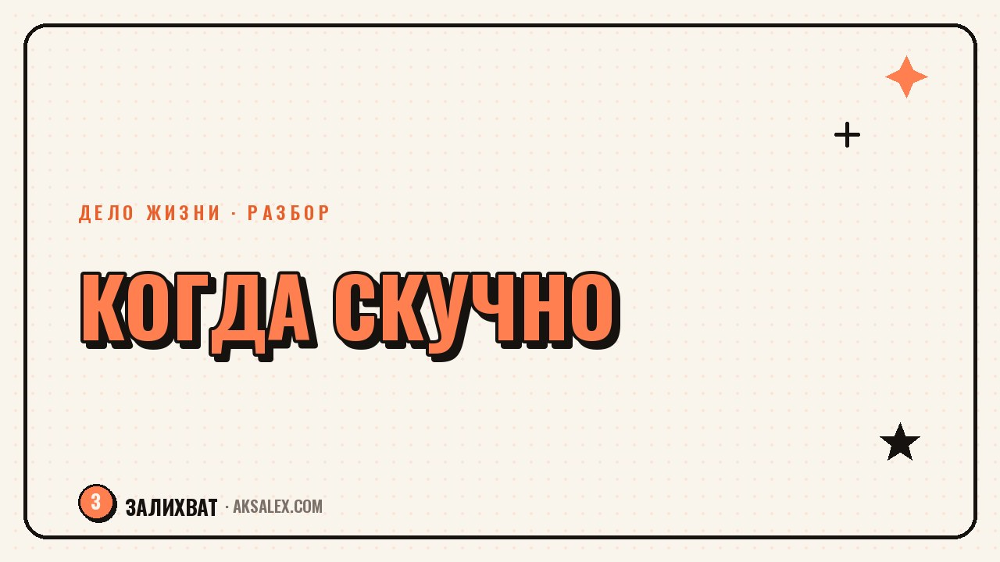

Как найти дело жизни, если скучно делать одно и то же

Есть люди, у которых дело жизни выглядит как ровная прямая линия: нашли одно направление и углубляются в него годами. А есть те, у кого интерес к любому занятию держится месяц-два, а дальше наступает скука, и кажется, что с тобой что-то не так - раз не можешь, как другие, усидеть на одном месте. Разберём честно, что на самом деле означает быстрая скука, и как искать дело жизни, если монотонность тебе противопоказана.
Почему быстро наскучивает одно и то же
Скука от повторения - не всегда признак лени или несерьёзности. У части людей интерес работает по-другому: им важна новизна и развитие внутри процесса, а не повторение одной и той же операции. Если работа превращается в рутину без изменений, мозг начинает воспринимать её как завершённую задачу и теряет к ней энергию - это нормальная особенность, а не недостаток характера.
Отдельно стоит разделить два разных случая. Первый - тебе скучно от самой сути занятия, и дело действительно не подходит. Второй - тебе скучна не суть, а форма: ты делаешь правильные вещи, но без роста, новых задач и вызовов, и именно отсутствие развития создаёт скуку, а не само направление.
Как отличить 'не моё дело' от 'моё дело застыло'
- Если тебе скучна сама суть занятия - ты не хочешь даже разбираться в нём глубже
- Если тебе скучна форма - ты продолжаешь интересоваться темой, но конкретные задачи стали предсказуемыми
- Проверка: представь, что тебе дали в этой же сфере совершенно новую, сложную задачу - загорается ли интерес
- Если загорается - дело скорее твоё, и нужно усложнение, а не смена направления
Можно ли построить дело жизни без монотонности
Миф, что дело жизни обязательно выглядит как многолетнее углубление в одну узкую вещь, довольно устойчив, но не единственно верен. Есть формат, когда дело жизни - не конкретная профессия, а определённый тип задач или способ мышления, который ты применяешь в разных сферах. Например, тебе может нравиться не 'быть дизайнером', а решать задачи через визуальное мышление - и тогда дело жизни живёт сразу в нескольких направлениях, которые внешне выглядят как разное.
В этом случае твоё дело жизни - не точка на карте, а траектория. Задача не искать одну профессию на всю жизнь, а находить общий знаменатель между вещами, которые тебя зажигали, даже если формально это были разные занятия.
Дело жизни не обязано быть одной темой навсегда. Для кого-то это постоянство в одном направлении, а для кого-то - постоянство в способе мышления, который применяется к разным темам. Второй вариант не хуже первого, это другой тип устройства.
Как устроить себе занятие, которое не наскучит быстро
Если ты узнаёшь в себе человека, которому важна новизна, дело жизни стоит строить так, чтобы в него был встроен механизм усложнения. Это касается и выбора ниши, и способа организации работы внутри неё.
Разбор по шагам
- Выбирай направление не по узкой специализации, а по широкому полю, где есть куда расти вглубь и вширь
- Договорись с собой заранее: раз в несколько месяцев добавляешь новый уровень сложности или новую задачу
- Ищи проекты с разными клиентами или темами внутри одного направления, а не один длинный однотипный проект
- Фиксируй момент, когда интерес начинает падать - это сигнал усложнить задачу, а не бросить дело целиком
- Разреши себе менять форму занятия, оставляя суть - например, оставаться в теме, но сменить формат работы с клиентами
Сравнение двух стратегий поиска дела жизни
Нет правильной и неправильной стратегии - есть та, что подходит именно твоему типу интереса. Полезно сверить обе и честно понять, какая ближе к тебе.
| Параметр | Стратегия глубины | Стратегия широты |
|---|---|---|
| Что в основе | Одна тема на годы, углубление | Общий способ мышления в разных темах |
| Риск | Скука без встроенного усложнения | Ощущение разбросанности и непостоянства |
| Что помогает | Регулярные новые вызовы внутри темы | Умение находить связь между разными занятиями |
| Кому подходит | Тем, кому важна предсказуемость и мастерство | Тем, кому важна новизна и разнообразие |
Что делать, если скука мешает прямо сейчас
Если скука уже накрыла текущее занятие, не нужно сразу бросать всё и искать что-то совершенно новое - часто это приводит к повторению того же цикла через несколько месяцев на новом месте. Сначала проверь, можно ли усложнить текущую задачу: взять более трудного клиента, предложить себе новый формат, добавить элемент, которого раньше не делал.
Если после честной попытки усложнить всё равно остаётся пустота - вероятно, дело не в форме, а в сути, и тогда стоит искать новое направление. Но делай это осознанно, а не на эмоциях от одной скучной недели - дай себе хотя бы месяц, чтобы отделить временную усталость от настоящего несовпадения.
Частые вопросы
Почему быстро наскучивает любимое дело через пару месяцев?
Часто это не признак того, что дело не твоё, а сигнал, что занятие застыло в одной форме без развития. У людей, которым важна новизна, интерес угасает при повторении одинаковых задач, даже если сама тема им действительно близка.
Может ли дело жизни меняться со временем, а не быть одной темой навсегда?
Да, для некоторых людей дело жизни - это не конкретная профессия, а способ мышления или тип задач, который применяется в разных сферах. Такая траектория не хуже многолетнего углубления в одно направление, она только устроена иначе.
Как понять, что дело не моё, а не только наскучила форма работы?
Представь, что в этой же сфере тебе дали новую сложную задачу - если интерес загорается, дело скорее твоё и нужно усложнение, а не смена направления. Если даже новая задача не вызывает интереса, скука связана с самой сутью занятия.
Что делать, если постоянно хочется менять направление?
Попробуй найти общий знаменатель между вещами, которые тебя зажигали - возможно, это не разные дела, а одно дело в разной форме. Если общего знаменателя нет, это тоже нормально: можно строить дело жизни на принципе разнообразия, а не постоянства темы.
Сколько времени стоит ждать перед тем, как бросить наскучившее дело?
Дай себе хотя бы месяц и сначала попробуй осознанно усложнить текущую задачу, прежде чем менять направление. Это помогает отличить временную усталость от настоящего несовпадения с делом.
Раз тема оказалась полезной, вот что почитать следующим. Забота о семье как дело жизни - без вины и без привязки к карьере.
Читать статью →а не вручную